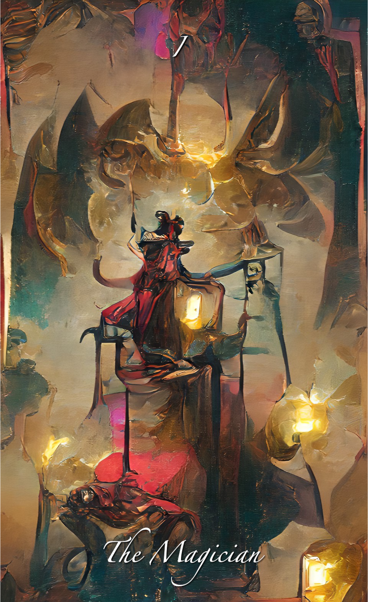

The Magician

Description
The Magician represents the starting point. The unfettered potential. He has mastered all the tools of the deck, and is master of his domain.
In this deck, the Magician is creating his own light, perhaps drawing from all the sources around him?
Aspects
- Bisexual Energy
- Creator of Light
- Connected Fully in the Physical
- Mysterious
- Wise and Creative
Readings
- Place yourself in the 'real' world.
- Recieve the Divine Power.
- Seek Solutions in the Physical World.
- Use all of the Tools you possess.